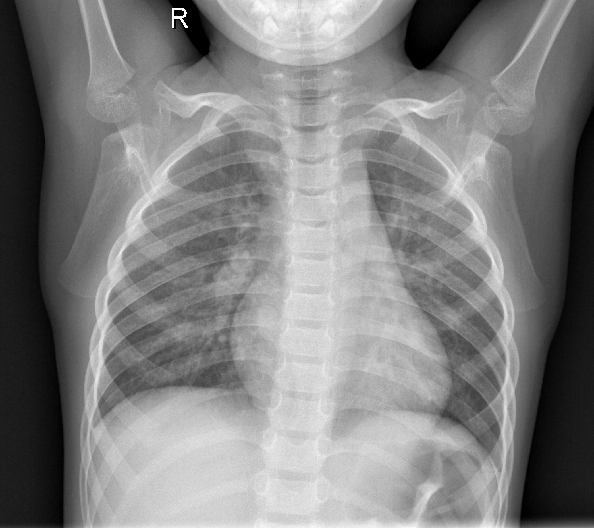

EV
Eleanor Vance
(58y, Female) STAT URGENT
ID: PT-1002
•
Modality: CT Thorax with IV Contrast
•
Study Date: 28/10/2026
Radiology Department
Patient Scans
24 Slices
WW: 1500 WL: -600 (Lung)

3.2cm Mass
94.8% Malig
Pleural tethering (+)
SLICE 14 / 24
Thorax CT • 1.25mm
Attached pdf reports (1)
+ Add report
PDF
clinical_radiology_report.pdf
184 KB • Verified Signed
Diagnostic Radiology Report
PT-1002
Clinical Indication:
58-year-old female presenting with acute pleuritic right-sided chest pain, persistent hemoptysis for 3 weeks, and 12-pack-year smoking history.
CRITICAL FINDING: Solitary Pulmonary Mass
Spiculated lesion with high malignancy risk requiring rapid multidisciplinary oncology staging.
Systematic Findings:
- Lungs/Pleura: 3.2 x 2.8 cm heterogeneously enhancing solitary pulmonary mass in right upper lobe with corona radiata and pleural retraction.
- Mediastinum: Station 4R paratracheal node measures 1.2 cm in short axis. No subcarinal lymphadenopathy.
- Cardiovascular: Main pulmonary arterial trunk patent without filling defects.
Impression:
1. Primary bronchogenic carcinoma of the right upper lobe (cT2aN1M0, Stage IIB).
2. Recommend urgent thoracic surgery consult, PET-CT staging, and core biopsy.
Clinical Report AI Co-Pilot
Grounded in CT Thorax & active EHR data
Summarize findings
Fleischner protocol
Differential diagnosis
Ask clinical co-pilot about this scan or report...